Gradient fills are graduated blends of two or more colors.
You use the Gradient panel to create or modify a gradient fill. The
Interpolate tool blends the shapes and colors of objects together into a new
blended object or series of intermediate shapes.
In this lesson, you’ll learn how to do the following:
Create and save gradients.
Add colors to a gradient.
Adjust the direction of a gradient blend.
Create smooth-color blends between objects.
Blend the shapes of objects in intermediate steps.
Modify a blend, including adjusting its path and changing the shape
or color of the original objects.
Getting Started
You’ll explore various ways to create your own color gradients and
blend colors and shapes together using the Gradient panel and the Blend
tool.
File > Open file L11start.svg. The front
chili and zigzag lines are filled with gradients. The chilies are grouped
objects. The background rectangles are locked to prevent accidental
modification as you practice on the artwork.
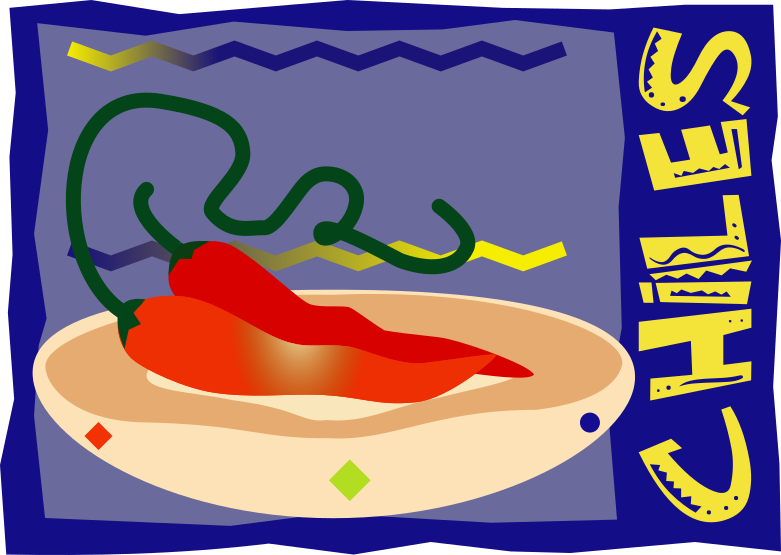
Starting artwork for Tutorial 11.
Choose File > Save As… and save the file as
Chilies.svg in a convenient location.
Creating a Gradient Fill
Gradients can be used very much like colors to fill objects that you
create. A gradient fill is a graduated blend between two or more colors. You
can easily create your own gradients, or you can use the gradients provided
with Inkscape and edit them for the desired effect.
To begin the tutorial, you’ll create a gradient fill for one of the
chili peppers.
Using the Select tool (), click to select the chili
pepper in the back.
The pepper is painted with a solid color fill and no stroke, as
indicated in the Fill and Stroke boxes at the bottom of the toolbox.
The back chili is selected.
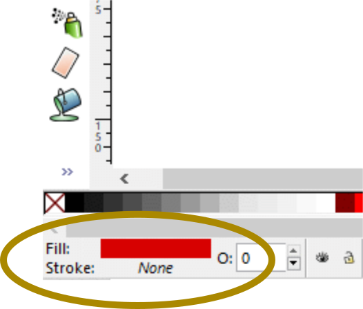
The Fill and Stroke boxes show that the back chili has a
solid fill and no stroke.
Choose Object > Fill and Stroke…, and click
on the Linear gradient tab in the Fill and Stroke panel that
appears.
Your example might show a gradient background of black grading into
transparency or another combination of colors if you have already been
working with gradients. The example here shows the original of the chili
grading into transparency as an artifact of previous experiments. Note that
the Fill and Stroke boxes now show that a gradient has been applied and no
stroke.
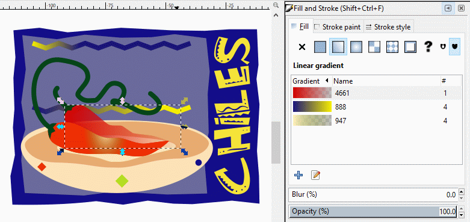
The back chili now has a linear gradient applied (no
stroke).
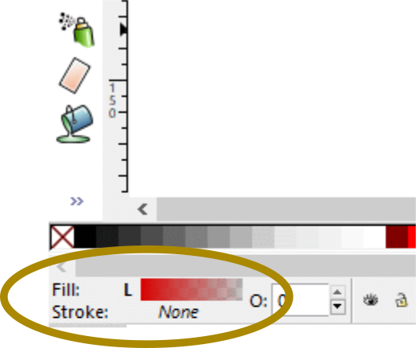
The Fill and Stroke boxes show a gradient fill (no
stroke).
In the Fill and Stroke panel, click on the Edit Gradient
icon () just below the Gradient library listing. An Edit
Gradient tool appears as a rectangle enclosing the chili with a
gradient adjustment tool (line segment with end handles) inside. The square
and circle that end the line segment represent what are called gradient
stops, or just stops, where one color starts (the square handle)
and the other ends (at the circular handle). The Select tool cursor changes
into the Edit Gradient cursor ().
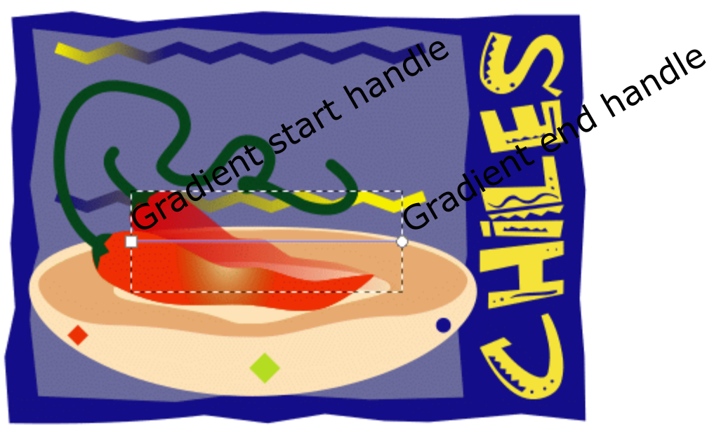
Edit gradient tool with gradient stops.
Select the square stop with the Edit Gradient cursor (). The square stop turns blue to show that it is active.
In the Fill palette in the Fill and Stroke panel,
click on the RGB tab (Red Green Blue) if that
palette isn’t selected already.
Enter these RGB values in the Color palette: R = 204, G =
0, B = 51, and A = 255. (Press <Tab> to select each
text box.) Press <Enter> or <Return> to apply the last value
typed.
You will now make a duplicate of the chili. This copy will contain
the fill color that represents the end of the gradient. With the Select
tool () active, select the chili and make a duplicate of it with
<Ctrl>-D or by choosing Edit > Duplicate. Note that
the duplicated chili adds to the overall darkness of the gradient because
there are two gradient chilis, one ontop of the other.
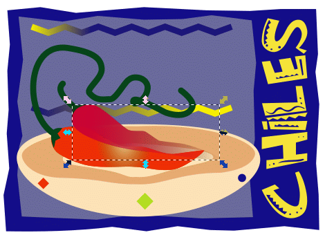
Duplicated chili ontop of the original gradient chili. Note
that the gradient has darkened because there are now two
chilies.
With the duplicate chili still selected, click on the Flat
color icon (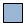) in the Fill and Stroke panel. The selected chili
takes on the solid color that starts the gradient of the original chili.
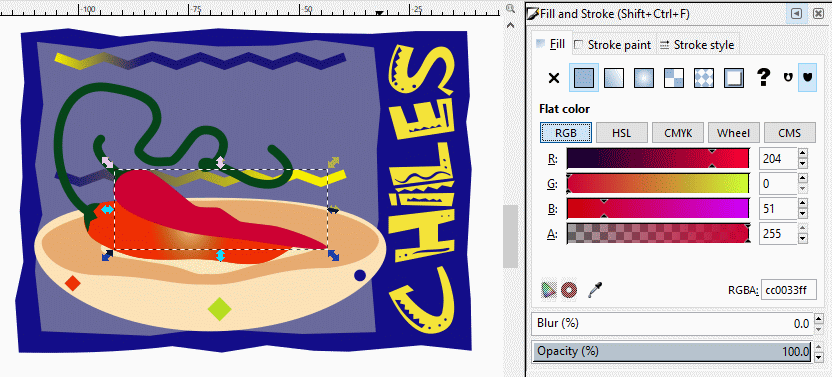
The duplicated chili now has a solid color.
The selected chili is ready to become the end portion of the
gradient. With the Flat color tool active, click on the RGB
button if it is not already selected.
Change the ending color by entering these values in the Color palette:
R = 0, G = 179, B = 0, and A = 255. (Press
Tab to select each text box.) Press <Enter> or <Return> to
apply the last value typed. The resulting green color will define the end
stop of the gradient.
The duplicated chili is colored a solid
green.
Press the <PgDn> key 7 times to (eventually) place the green
chili directly underneath the original chili with the gradient. The
chili’s gradient is now complete.
Deselect the chili and File > Save.
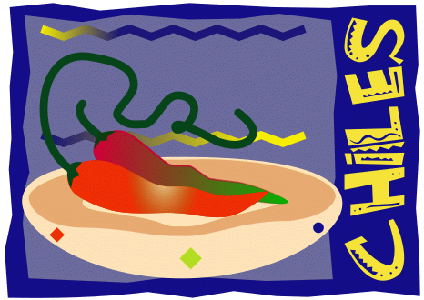
Back chili gradient finished.
Adjusting the Direction of the Gradient Blend
Once you have painted an object with a gradient fill, you can adjust the
direction that the gradient colors blend in the object. Now you’ll
adjust the gradient fill in the other chili pepper.
Use the Select tool () to select the chili pepper in front.
Notice that it’s painted with a radial-type gradient (as indicated in
the Fill and Stroke panel).
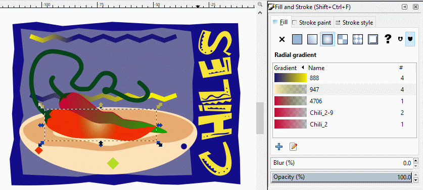
Front chili selected.
You can create linear or radial gradients. Both types of gradient have
a starting and an ending color of the fill. With a radial gradient, the
starting color of the gradient defines the center point of the fill,
which radiates outward to the ending color.
Select the Gradient tool, which is one of the hidden
tools at the bottom of the toolbox. The Radial gradient tool
automatically appears over the selected chili.
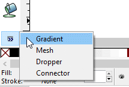
Gradient tool
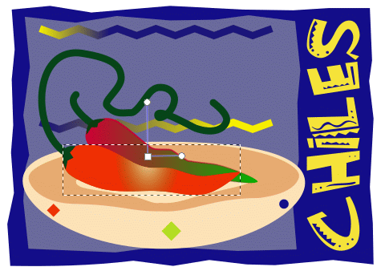
Front chili with Gradient tool
The Gradient tool works only on selected objects that are
filled with a gradient.
Click or drag the Gradient tool across the selected chili
pepper to change the position and direction of the gradient’s
starting and ending colors. You move the entire Gradient tool when
you drag the square handle. You rotate the orientation of the radial
gradient, and extend or shorten the gradient effect when you drag one or
the other cirular handle.
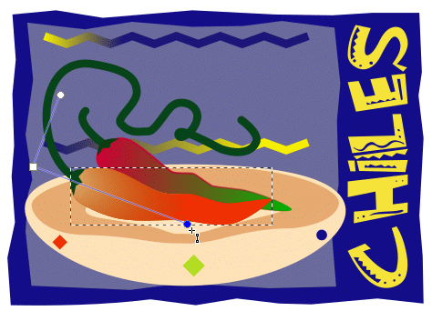
Moving the Gradient tool.
For example, drag within the pepper to create a short gradient with
distinct color blends; drag a longer distance outside the pepper to
create a longer gradient with more subtle color blends. You can also drag
from the ending color to the starting color and vice versa to transpose
the colors and reverse the direction of the blend as you can see
below.
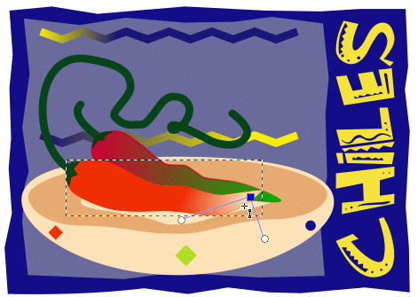
Moving the Gradient tool some more.
Deselect the artwork by choosing Edit > Deselect,
and then choose File > Save.
If you experimented with changing the direction of the gradient and want
to revert to the prior direction, press <Ctrl>-Z or click on the
Undo icon () in the Commands Bar until you arrive back at the original
placement of the gradient.
Adding Colors to a Gradient
Every gradient in Inkscape has at least two gradient stops. By editing
the color mix of each stop and by adding gradient stops in the Gradient
palette, you can create your own custom gradients.
Now you’ll paint some type that has been converted to paths with a
linear gradient fill, and edit the colors in it.
With the Select tool (), <Shift>-click each of the
letters to group-select them in the type CHILES.
The CHILES type has already been converted to paths so you can fill it
with a gradient. (To convert type to paths, select it and choose Path
> Object to Path. See Lesson 8, "Working with Type," for more
information.)
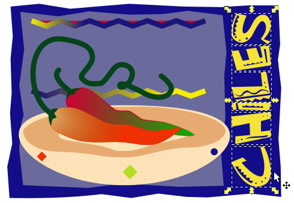
Text group-selected
With the text still selected, click on the Group selected
objects icon () to group the letters.
By grouping the letters, you’ll fill each individual letter with
the same gradient at once. Grouping them also makes it easier to edit the
gradient fill globally.
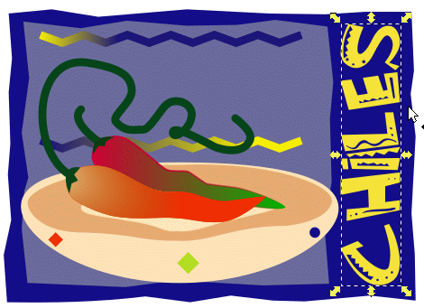
Text has been grouped
In the Fill and Stroke panel, click the Linear gradient
button to paint the type outlines with the current gradient fill – in
this case, with the radial gradient that was last used in the chili
pepper.
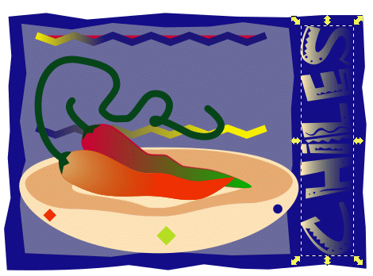
Paint the selected type with the last-selected gradient
fill.
To edit the colors in a gradient, you click on the Edit
Gradient icon () just below the Gradient library listing to
activate the Edit Gradient tool.
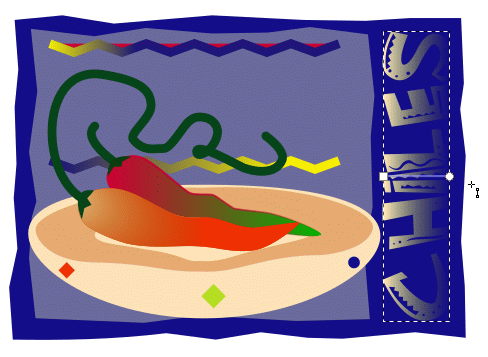
Gradient tool active.
Click the left (square) gradient stop to select it so that you can
adjust the starting color of the gradient. The left stop turns blue to show
that it is selected. The Color palette displays the color of the currently
selected gradient stop and the Flat color button is highlighted,
signaling that you are ready to select a solid color for the gradient
start.
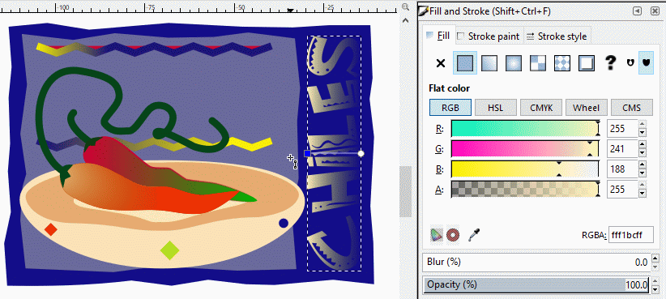
Left (square) gradient stop clicked.
We have chosen lime green for the starting color in the gradient.
Click on the Lime green swatch in the Color palette.
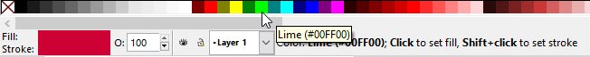
Lime green swatch selected in the Color palette.
The text turns lime green. The Flat color button remains
highlighted. Note that the Linear gradient button has an outline
indicating that it is still active.
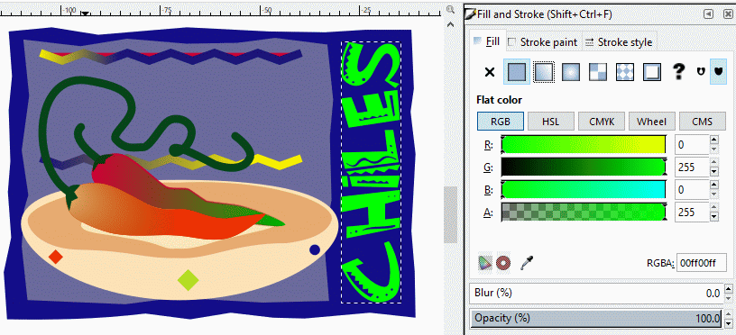
Text has a solid lime green fill.
Click on the Linear gradient button (). The lime green color in the text now shows up as the start of the
gradient.
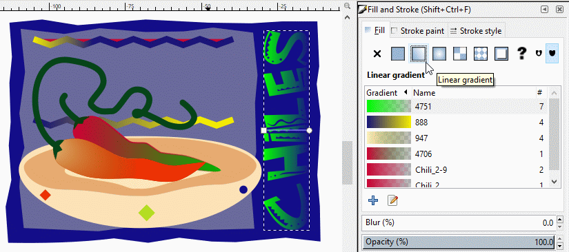
Text has a solid lime green start of gradient.
Now you’ll add intermediate colors to the gradient to create a
fill with multiple blends between colors.
You add a color to a gradient by adding a gradient stop. When you add
a new gradient stop, a diamond appears above the gradient bar to mark the
colors’ new midpoint.
Click the Edit Gradient icon (), then
with the Edit Gradient cursor (),
double-click the middle of the Edit gradient tool bar. A diamond
appears at the midpoint indicating the placement of the new gradient stop. It
is colored blue, indicating that it is active.
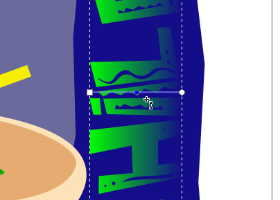
Creating an intermediate gradient stop.
With the intermediate gradient stop still active (blue color), select
the yellow color swatch in the Color palette.
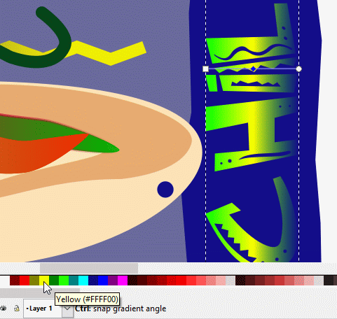
Choose yellow for the intermediate gradient stop.
You will now add the ending color to the gradient by using the
Dropper tool.
First, click the right-hand (circular) gradient stop on the Edit
gradient tool bar to activate it. It turns blue.
Click on the double arrow at the bottom of the toolbox and choose the
Dropper tool.
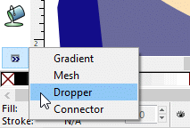
Selecting the Dropper tool.
Click in the light red area of the front chili with the Dropper
cursor () to sample its color.
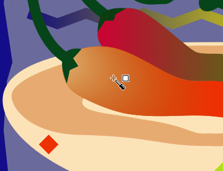
Light red color sampled for gradient end using Dropper
tool.
The text colors now grade from lime green at the left to yellow in
the middle to light red at the right. The Dropper cursor ()
changes back to the Edit Gradient cursor ().
Press <Esc> three times to deselect the right-hand gradient stop,
exit the Edit Gradient tool, and reactivate the Select tool ().
The text now has a three-color gradient.
File > Save.
Simulating Blending with a Blur
Blurring the edge or edges of an object of one color over another object
with a different color can produce pleasing smooth gradient effects.
In this section, you will blur the edge of the smaller object inside
the bowl to blend its color smoothly into the outer shape’s color.
Click the inner cream-colored object with the Select tool ().
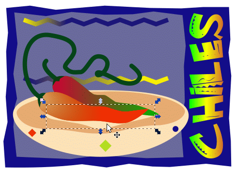
Select the smaller object in the bowl.
In the Fill and Stroke panel, set the Blur to
5.4. At this setting, the bounding box of the blurred object just
touches the edge of the bowl.
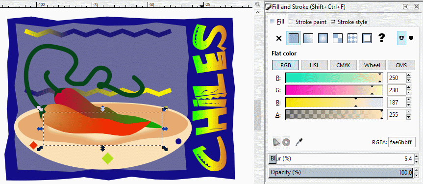
The blur setting is set to 5.4 percent.
The blurred object can stand to be stretched out a little bit. With
the Select tool (), drag each side handle out so they are located
about halfway between the side edges of the smaller selected object and
the inner edge of the bowl.
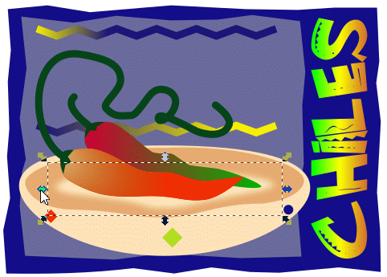
Pulling out the side edges of the bounding box.
Deselect the artwork and File > Save.
Blending Intermediate Steps
In this section, you’ll create a series of blended shapes between
three different-colored shapes on the outside of the bowl by specifying the
number of steps in the blend and using the Generate from Path -
Interpolate extension tool to create the blend.
First, group-select the red and yellow diamonds below the rim
of the bowl with <Shift>-click. Then, choose Path >
Object to Path.
The Interpolate tool works only on paths, so any shape like a
circle, square, or other shape created with a shape tool needs to be
converted to a path in order for it to work smoothly.
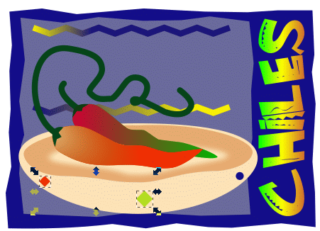
Convert the diamond shapes to paths.
Choose Extensions > Generate from Path >
Interpolate…
When the Interpolate dialog box appears, set Interpolation
steps to 6 to create six intermediate shapes, set
Interpolation method to 1 (method 2 is an alternative
algorithm for blending if method 1 doesn’t work), check the
Interpolate style checkbox, and leave the Duplicate endpoints
and Use Z-order checkboxes unchecked. However, check the Live
preview checkbox so you can see the blend result before you actually
apply blending.
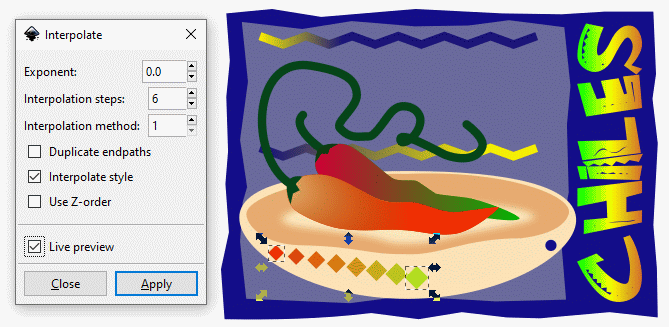
Previewing the Interpolate 1 blend.
The result is a sequence of eight diamonds, including the original
beginning and ending diamonds, that changes step-wise in color and size.
The transition in attributes (color and size) is smooth from start to
finish.
Click the Apply button, and then the Close button.
The sequence of diamonds is a grouping of the two end diamonds as one
group and the six intermediate diamonds as the other group.
With the diamonds still selected, click on the Ungroup selected
groups icon () in the Tools Control
Bar.
Click off the artwork to deselect the diamonds.
We’ll complete the line of decorations along the underside of
the bowl using the same technique that we used to create the left hand line
of diamonds.
Group-select the central diamond and the blue circle.
Choose Path > Object to Path.
Choose Extensions > Generate from Path >
Interpolate…
As you did before, set Interpolation steps to 6, set
Interpolation method to 1, check the Interpolate style
checkbox, leave the Duplicate endpoints and Use Z-order
checkboxes unchecked, but check the Live preview checkbox.
The result below looks ... strange.
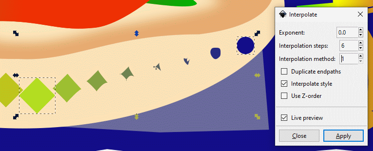
This shape-blending result just doesn’t look
right.
Let’s change the Interpolate style value to 2
to see what the other blend method does.
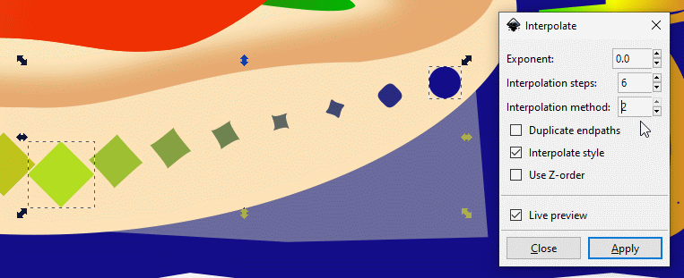
These shape-blending results change more smoothly and
predictably.
The blended decorations need to be properly spaced and aligned along
a curve that parallels the edge of the bowl. You will ungroup them (the
objects are already partially grouped from the blending process), convert
them to paths, put them on a straight-line path (called the skeleton), and
then use the Bend tool to give the skeleton a curve. (See Help
> Inkscape Manual > 8. Live Path Effects (LPEs) in the Table of
Contents > Bend)
Group-select the blended objects by marquee-selecting with the Select tool
() or using <Shift>-click.
Press <Shift>-<Ctrl>-G twice to ungroup the decorations
into individual objects.
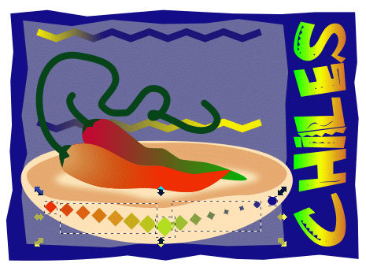
First ungrouping
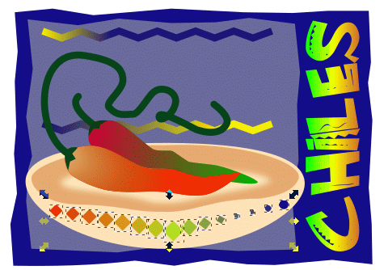
Second ungrouping
Now that the decorations are all individual objects, you will align
them onto a central horizontal line of symmetry (the skeleton). With the
decorations all individually selected, choose Object > Align
and Distribute… to bring up the Align and Distribute panel.
In the Align section, select Selection Area in the
Relative to: options box, click on the Center on horizontal
axis icon (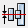). The decorations automatically
center on the skeleton.
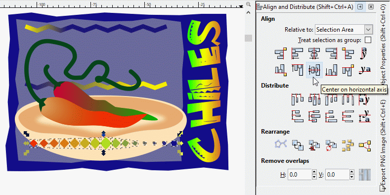
Center the decorations on the horizontal axis of symmetry
skeleton).
The decorations should be distributed along the skeleton so they have
equal spacing between adjacent objects. Click on the Make horizontal gaps
between objects equal icon (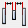). The decorations
automatically shift on the skeleton so they are equally spaced.
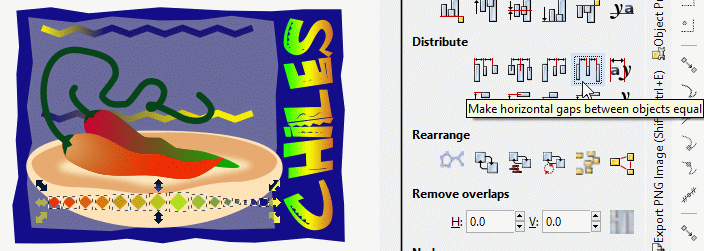
Redistribute the decorations so they have equal
spacing.
Now that the decorations are aligned and distributed on the skeleton,
it’s high time to convert these them into one collective path.
Regroup them by clicking on the Group selected objects icon () in the Tools Control Bar. Choose Path >
Object to Path. There is no visible change, but behind the scenes,
there is no object information that any of these objects are diamonds,
circles, or anything in between. They are now only line segments and curves
— things that the Bend function can work with.
Click on the Add path effect plus sign ().
The Add Path Effect library listing box appears. Select
Bend.
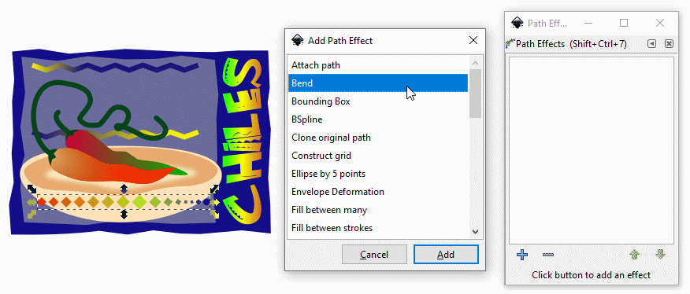
Select the Bend function.
The Bend bounding box and bar appear over and across the
decorations. The Node tool (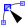) is active.
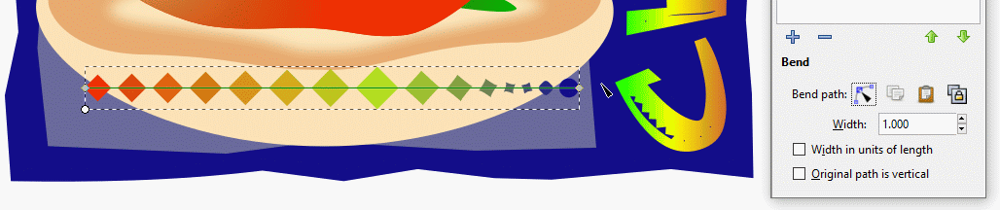
The Bend tool.
Bend the skeleton down with the Node tool ().
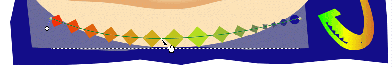
Bending the skeleton down.
You can fine-adjust the curvature, placement, and size of the skeleton
by alternating between the Node tool () and the Select tool ().
The Edit on-canvas tool, whose cursor looks exactly like the Node
tool cursor, allows you to adjust the degree of curvature of the skeleton,
the placement of the endpoints of the skeleton, and to flip the objects
upside-down. The Select tool allows you to move the whole collection of
objects as a unit (they have all been grouped by the Bend process),
rotate it, and rescale it like any other object or group of objects.
When you use the Select tool and need to fine-adjust using the Node tool
(),
click on the Edit on-canvas icon in the Path Effects dialog box
(it looks exactly like the Node tool icon and has a dotted outline surrounding
it when it’s active) and then continue with fine-adjustment.
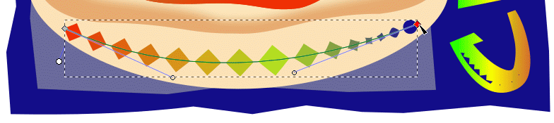
Fine-adjusting the curve.
When you are satisfied with your design, click off the artwork to
deselect it.
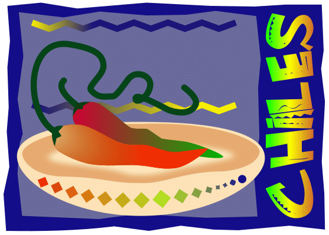
Result.
Combining Blends with Gradients
You can blend objects that are filled with gradients to create different
effects of color blending. The two zigzag lines in the artwork are filled
with gradients.
Now, you’ll blend the gradient-filled lines to create a multicolored
blend in the artwork. The theme of this particular design is a yellow
stripe diagonally crossing an area of dark blue zigzag lines.
First, set guidelines on all four sides of the block of space that
includes the two zigzag lines. These guidelines will serve to reposition
the filled block of zigzag lines you will create. You will move the two
zigzag lines outside of the artwork so you can work without any distracting
background. When you have finished with this section’s task, you will
move the zigzag line block back into the artwork exactly back into its
original location. The guidelines will help you do this.
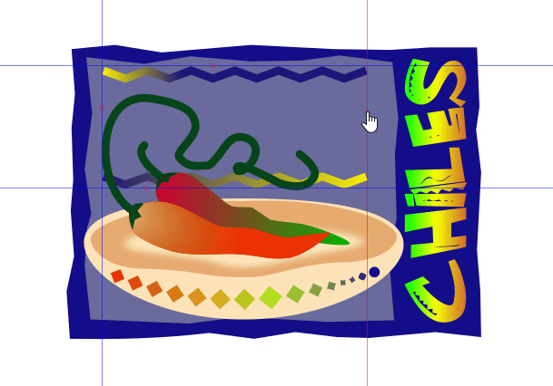
Set guidelines for precise placement.
<Shift>-click both zigzag lines to group-select them.
<Ctrl>-drag the grouped lines to one side of the artwork so you can
work on them without distraction from background and nearby coloration.
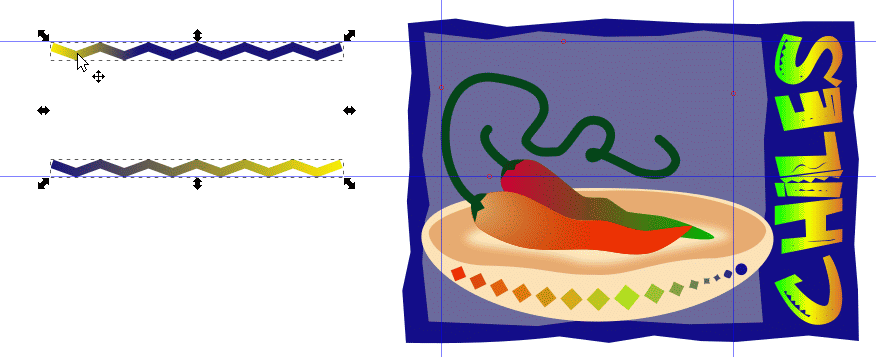
Moving the zigzag lines outside of the artwork.
Using <Ctrl>-D, make six duplicates of one or the other line. We
duplicated the top line, as you can see by its gradient.
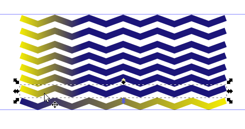
Making six duplicate zigzag lines.
You will now even out the spacing between the lines. Group-select all
eight lines. Choose Object > Align and Distribute…
In the Align and Distribute panel, click on the Make
vertical gaps between objects equal icon () in the Distribute section of the panel. The lines
are automatically distributed evenly up and down.
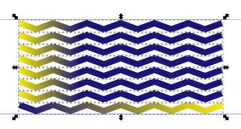
The zigzag lines are now distributed evenly
vertically.
You will now apply a gradient to the newly added six lines as a group.
Group-select the inner six zigzag lines and press <Ctrl>-G to group
them into one object.
Choose Object > Fill and Stroke…, click on
the Stroke paint tab (These zigzag lines have strokes but no fill),
and click on the Linear gradient button (). The selected lines fill with the default black and white gradient.
If you have created gradients earlier, then the gradient will be the last
one that you used.
Black and white default gradient.
Click on the Gradient tool icon ().
If the Flat Color icon () highlights, click the Linear gradient
icon again to reactivate it.
Click on the Linear gradient button to reactivate
it.
With the Edit gradient cursor ()
active, click on the left end gradient stop marker to make it active. The
square marker turns blue to show that it is active. The Edit gradient
button in the Fill and Stroke panel becomes the Pick colors from
image button () (I’ll call it the Dropper cursor or icon from here
on) You can now sample colors and apply them to gradient stops. Place the
cursor over the yellow left beginning of the top zigzag line.
Place the dropper icon on the yellow beginning of the top
zigzag line to sample it.
Click on the yellow color. The left side of the gradient is set to
yellow. The dropper cursor reverts to the Edit gradient cursor ().
With the Edit gradient cursor () active, click on the rightmost gradient marker to make it active.
Result of sampling yellow color. The Dropper cursor changes
to the Gradient tool cursor. The rightmost gradient marker is now made
active.
Click on the Edit gradient icon ()
so the cursor will change into the Dropper cursor (). Place
the cursor over the right end of the topmost zigzag line to sample its dark
blue color.
Sampling the right end of the top zigzag line for its dark blue
color.
Click on the dark blue color to apply it to the right side of the
gradient. The Dropper cursor reverts to the Edit gradient cursor.
Deep blue color applied to right end of gradient.
With the Edit gradient cursor () active, double-click on the the Edit gradient tool bar between
the intermediate stop marker and the right-end stop marker in order to create
yet a second intermediate gradient marker.
Both intermediate stop markers will define the left side and right side of
the yellow stripe that traverses the dark blue background.
Adding a second intermediate stop to the Gradient tool
bar.
Click-drag the left intermediate stop marker further to the left. The
yellow strip will be wide initially. You will make it narrower as you adjust
both its width and orientation.
Move the left intermediate stop to the left. Note that the
diamond is blue as the active stop marker.
Click on the Edit gradient button to activate the Dropper tool
().
Sample/set the yellow color of either the beginning of the top zigzag line or
the end of the bottom line.
Setting the first intermediate gradient stop to
yellow.
Now select the leftmost gradient marker on the gradient bar with the
Edit gradient cursor () and sample the dark blue color at the
beginning of the bottom zigzag line to set that color as the very first color
of the gradient.
Setting the leftmost gradient stop to dark blue.
Select the right intermediate stop and set its color to yellow using
the techniques you should be familiar with now. Note that the yellow stripe
is wide as defined by the two intermediate gradient stops.
Setting the second intermediate gradient stop to
yellow.
You are now in a position to adjust the width and orientation of the
yellow stripe with precision.
Click-drag each intermediate gradient stop closer toward the center of the
gradient bar until they divide the bar into thirds.
Then, individually move each end gradient marker until the yellow stripe
connects smoothly with the yellow area on the left of the top zigzag line and
the yellow area on the right of the bottom zigzag line. Make fine adjustments
to end and intermediate stop markers as you see fit.
When you bring the two intermediate markers closer together, you make the
width of the yellow strip narrower. You change the character of color
blending when you drag the end markers further away from the gradient block
you’re working on.
Moving the gradient tool bar.
When you have finished adjusting the gradient, you will move the
gradient block into the artwork.
Deselect the block by pressing <Esc> until the Select tool ()
is highlighted (pressing three times).
Marquee-select the gradient block with the Select tool () to
group it and click-drag it into the the rectangle defined by the guidelines
you set earlier in the artwork.
Moving the gradient block back into the artwork.
Click on the Lower selection one step icon in the Tool
Controls Bar until all the zigzags lie behind the chili stems and the
back chili, forming a backdrop tapestry.
Lowering the zigzags in the image stack.
Deselect the gradient block by clicking off the artwork, drag the two
horizontal guides up or down off the work window to eliminate them, and drag
the two vertical guides to the left or right to eliminate them.
Finished artwork.
File > Save.
You have finished this tutorial on blending colors to make gradients and
blending objects to make object blends. You now have experience on combining
the blending gradients and objects to enhance and broaden your graphic
design skills.
Experiment with different widths of the yellow stripe, the length of the
gradient tool bar, and adding different colors to the gradient. Let this
project serve as an initial idea of what you can do with color gradients and
object blending.
Review Questions
What is a gradient fill?
Name two ways to fill a selected object with a gradient.
What is the difference between a gradient fill and a blend?
How do you adjust the blend between colors in a gradient?
How do you add colors to a gradient?
How do you adjust the direction of a gradient?
How do you blend the shapes and colors of objects together.
Review Answers
A gradient fill is a graduated blend between two or more colors or
tints of the same color.
Select an object and do one of the following:
Click the Linear gradient button or Radial gradient
button in the Fill and Stroke panel to fill an object with the
default white-to-black gradient or with the last selected gradient.
Click a gradient swatch in the gradient library palette, also in the
Fill and Stroke panel.
Use the Pick colors from image tool () to
sample a gradient from an object in your artwork, and then apply it to
the selected object.
The difference between a gradient fill and a blend is the way that
colors combine together – colors blend together within a gradient
fill and between objects in a blend.
You drag one of the gradient’s stops on the Gradient
tool bar.
Double-click where you want to add the new color on the
Gradient tool bar with the Edit gradient cursor active () active. Then, with the Gradient tool icon ()
active, click on the color you want to add.
You click or drag the beginning or ending stop marker of the
Gradient tool bar with the Edit gradient cursor ()
to adjust the direction of a gradient. Make sure that the gradient stop
marker you want is blue, showing that it is active. Dragging a long
distance changes colors gradually; dragging a short distance makes the
color change more abrupt.
You first group-select the objects that will share a common gradient
among them and press <Ctrl>-G to group them into one object. While
the grouped objects are still selected, bring up the Fill and Stroke
panel, click on the Linear gradient button () or Radial gradient button (), click on the Edit gradient icon (),
and then adjust colors and direction as you see fit.

{kind=link}
 ), click to select the chili
pepper in the back.
), click to select the chili
pepper in the back. ).
).
 ) to group the letters.
) to group the letters. ). The lime green color in the text now shows up as the start of the
gradient.
). The lime green color in the text now shows up as the start of the
gradient.
 ) in the Tools Control
Bar.
) in the Tools Control
Bar. ).
The Add Path Effect library listing box appears. Select
Bend.
).
The Add Path Effect library listing box appears. Select
Bend. ) in the Distribute section of the panel. The lines
are automatically distributed evenly up and down.
) in the Distribute section of the panel. The lines
are automatically distributed evenly up and down.